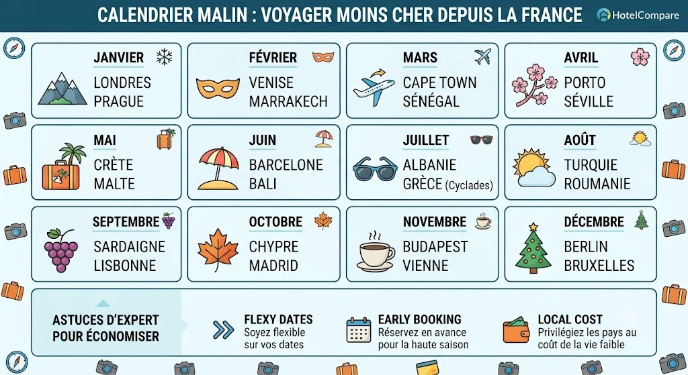

Pour voyager à moindre coût, la règle d'or est de privilégier le "hors-saison" ou les périodes d'intersaison. Voici une tendance générale des destinations abordables mois par mois :
### Calendrier des destinations économiques
* **Janvier & Février** : Idéal pour les escapades citadines européennes. *Destinations : Londres, New York, Copenhague, Marrakech.*
* **Mars** : Tarifs compétitifs avant le renouveau printanier. *Destinations : Afrique du Sud, Maghreb, Europe de l'Est.*
* **Avril & Mai** : Excellent rapport qualité-prix en Europe. *Destinations : Bulgarie, Roumanie, Croatie, Maghreb.*
* **Juin & Septembre** : Les mois les plus favorables financièrement. *Destinations : Grèce, Espagne, Italie, Bali.*
* **Juillet & Août** : Haute saison. Privilégiez les lieux moins prisés ou réservez très longtemps à l'avance. *Destinations : Grèce (Cyclades), Portugal, Turquie, Albanie.*
* **Octobre & Novembre** : Arrière-saison méditerranéenne idéale. *Destinations : Espagne, Italie, Croatie.*
* **Décembre** : Prix bas hors période de fêtes, sauf pour les destinations hivernales.
### Conseils d'expert pour réduire vos coûts
1. **Flexibilité** : Utilisez les outils de recherche "mois le moins cher" sur les comparateurs pour identifier les fluctuations.
2. **Destinations "Budget"** : Certains pays comme la **Bulgarie**, le **Vietnam**, le **Cambodge** ou l'**Albanie** permettent un coût de vie très faible (parfois moins de 30€/jour).
3. **Réservation** : Pour les destinations estivales prisées, l'anticipation reste votre meilleure arme pour maîtriser votre budget.
**Voyagez intelligemment en choisissant la bonne période pour votre destination !**